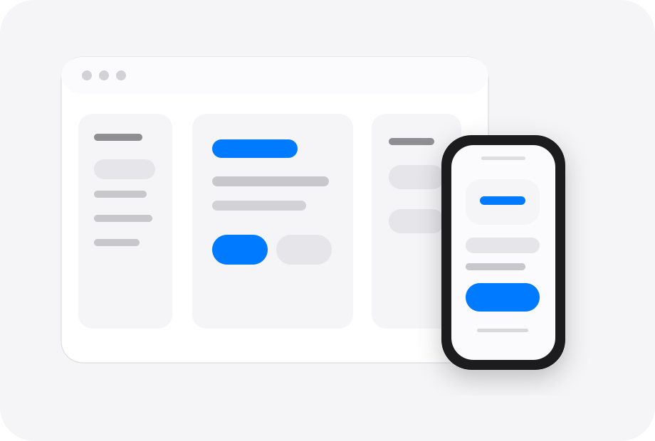

Preview Canvas
Content first, controls second
A calm, direct, adaptive workspace.
Desktop layouts use a sidebar, toolbar, and inspector; narrow screens collapse into a single column with bottom tabs. The visual system keeps system fonts, semantic colors, an 8 pt rhythm, and a small amount of functional glass.

System States
Component States
Hierarchy
Titles, content, and actions have a clear reading order.
Material
Glass appears only on toolbars and floating layers, keeping content stable.
Noncolor States
States use icon, text, and shape instead of color alone.
Accessibility
Accessibility is not an afterthought.
The demo includes keyboard focus, semantic buttons, visible labels, comfortable control sizes, dark appearance, reduced transparency, and larger text states.
⌘
K
Focus Search